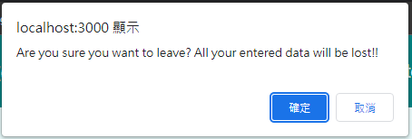

在實際專案的需求中，通常不會那麼單純一個路徑就顯示一種 component 樣式，常見的情況會由相同的 component 帶入不同的資料來顯示不同的內容，因此，在同一個 route 就需要透過 param 來判斷資料的來源
Adding Dynamic Rotues with Params 首先，建立一個顯示不同產品的 component，並註冊於 route
1 2 3 4 5 6 7 8 9 const App = () => { return ( <div> <Route path="/product-detail" > <ProductDetail /> </Route> </div> ); };
但這裡會出現一個問題是，當切換到 product-detail 時，沒有提供其他方式以辨別傳入的資料，這時候就可以在 path 後方加入讓一參數，並透過冒號: 已作區別
1 2 3 4 5 6 7 8 9 const App = () => { return ( <div> <Route path="/product-detail/:productId" > <ProductDetail /> </Route> </div> ); };
有了參數定義後，接下來就是要在 component 內取得參數，只要透過 useParams() hook，就可以取得定義在 url 上的參數，其回傳的是一個 object，key 就是我們自定義的名稱
1 2 3 4 5 6 7 import { useParams } from "react-router-dom" ;const ProductDetail = () => { const params = useParams(); return <div > {params.productId}</div > };
在程式中設計路徑時，如果有類似這種多層結構的 UI 操作，可以仿照資料結構路徑的方式，沿用上一層的名稱，並在後方加上對應參數，所以 products 與 product-detail 的路徑就可以改成以下命名方式
1 2 3 4 5 6 7 8 9 10 11 12 13 14 15 16 17 18 function App ( return ( <div> <MainHeader /> <main> <Route path="/welcome" > <Welcome /> </Route> <Route path="/products" > <Products /> </Route> <Route path="/products/:productId" > <ProductDetail /> </Route> </main> </div> ); }
但轉換到畫面一看會發現，當我們點擊切換到子路徑 /products/prodcutId ，Products 和 ProdcutDetail component 都被渲染出來了，原因為 React 的規則是只要包含在內就算符合，不需要完全相同
Switch 為了解決這個問題，react-router 提供了另外一個 component - Switch，只要將這個 component 包覆所有目標 Route，就只會渲染最先符合的 component
1 2 3 4 5 6 7 8 9 10 11 12 13 14 15 16 17 18 19 20 21 22 import { Route, Switch } from "" ;function App ( return ( <div> <MainHeader /> <main> <Switch> <Route path="/welcome" > <Welcome /> </Route> <Route path="/products" > <Products /> </Route> <Route path="/products/:productId" > <ProductDetail /> </Route> </Switch> </main> </div> ); }
exact 但很顯然的這還是沒有完全符合我們的需求，因為不論切換到哪個 /products/:productId，因為由上而下判斷的緣故，/products 都會優先符合，最直覺的作法是把 /products/:produdctId 提升到上方
1 2 3 4 5 6 7 8 9 10 11 12 13 14 15 16 17 18 19 20 function App ( return ( <div> <MainHeader /> <main> <Switch> <Route path="/welcome" > <Welcome /> </Route> <Route path="/products/:productId" > <ProductDetail /> </Route> <Route path="/products" > <Products /> </Route> </Switch> </main> </div> ); }
但 react-router 有一個更好的方法是在 component 加上 exact，代表需要完全符合該路徑才算通過，因為實際在開發時可能會有更多種路徑，如果還要明確地由上而下判斷排列可能容易搞混
1 2 3 4 5 6 7 8 9 10 11 12 13 14 15 16 17 18 19 20 function App ( return ( <div> <MainHeader /> <main> <Switch> <Route path="/welcome" > <Welcome /> </Route> <Route path="/products" exact> <Products /> </Route> <Route path="/products/:productId" > <ProductDetail /> </Route> </Switch> </main> </div> ); }
Route 除了可以用整個主頁面的切換上，還可以判斷不同的情況在頁面之中切換子頁面
本來就有一個 Welcome 頁面了，這裡我們希望如果是第一次拜訪網頁的使用者可以額外顯示其他文案，這時候就可以透過加上一層 child route 滿足這個需求
1 2 3 4 5 6 7 8 9 10 11 12 import { Route } from 'react-router-dom' ;const Welcome = () => { return ( <section> <h1>The Welcome Page</h1> <Route path="/welcome/new-user" > <p>Welcome, new user!</p> </Route> </section> ); };
雖然我們定義了許多路徑，但使用者可能會沒有輸入路徑導致沒有畫面顯示，而為了避免這種情況發生，我們可以定義一個預設頁面，凡是沒有輸入路徑就會將路徑自動導向這裡
react-router 提供了另一個 component Redirect，可以透過它指向預設頁面，但這裡需要特別注意的是，根路徑因為滿足任何路徑的條件，所以如果沒有加上 exact，無論 url 違和都會導向預設頁面
1 2 3 4 5 6 7 8 9 10 11 12 13 14 15 16 17 18 19 20 import { Route, Switch, Redirect } from 'react-router-dom' ;function App ( return ( <div> <MainHeader /> <main> <Switch> <Route path="/" exact> <Redirect to="/welcome" ></Redirect> </Route> <Route path="/welcome" > <Welcome /> </Route> ... </Switch> </main> </div> ); }
Preventing Possibly Unwanted Route Transition with the “Prompt” Component 在許多頁面跳轉上的操作時，為了避免使用者不小心觸發跳轉機制導致當前頁面的資料遺失，通常會在 UI 加上基本的防呆確認機制，React Router 就提供了一個 component - Prompt 讓使用者再次確認是否真的要執行頁面的跳轉已放棄當前頁面的資料
首先，在一表單 form 上，新增一個 event onFocus 確認使用者是否使用過表單欄位，接著 import Prompt component，其中有兩個參數，如下:
when: 判斷何時顯示這個 component
message: component 中所顯示的文案，其中的質為 function，第一個參數為 location object，可以透過它取得當下路徑資訊
1 2 3 4 5 6 7 8 9 10 11 12 13 14 15 16 17 18 19 20 21 22 23 24 25 26 import { useState, Fragment } from 'react' ;const someForm = () => { const [isEntering, setIsEntering] = useState(false ); const submitFormHandler = () => {}; const formFocusedHandler = () => { setIsEntering(true ); }; return ( <Fragment> <Prompt when={isEntering} message={(location ) => "Are you sure you want to leave? All your entered data will be lost!!" } /> <form onFocus={formFocusedHandler} onSubmit={submitFormHandler}> ...some input <button></button> </form> </Fragment> ); };
當表單使用過 (isEntering == true)，觸發任何會跳轉的動作後，就會出現一個 alert，其中的文字就是 message 所回傳的文字

點選 “確定” 就會照常跳轉，反之點選 “取消” 則留在原頁面
但有另一個情況是，點選表單送出欄位的按鈕時，沒有必要顯示這個再次確認的按鈕，因為如果表單沒有問題就會送出，表單有問題也會是透過欄位驗證機制來阻止這個動作，所以在 form submit click event 上，可以直接將判斷是否顯示 Prompt 的參數設為 false
1 2 3 4 5 6 7 8 9 10 11 12 13 14 15 16 17 18 19 20 21 22 23 24 25 26 27 28 const someForm = () => { const [isEntering, setIsEntering] = useState(false ); const submitFormHandler = () => {}; const formFocusedHandler = () => { setIsEntering(true ); }; const finishEnteringHandler = () => { setIsEntering(false ); }; return ( <Fragment> <Prompt when={isEntering} message={(location ) => "Are you sure you want to leave? All your entered data will be lost!!" } /> <form onFocus={formFocusedHandler} onSubmit={submitFormHandler}> ...some input <button onClick={finishEnteringHandler}></button> / / 我取消顯示 Prompt </ form> </Fragment> ); };
在 url 中，除了可以判斷路徑顯示對應的頁面與資料外，還可以額外透過 ? 作為分隔，加入更多參數來做為頁面顯示的條件，接下來的範例將透過參數判斷資料列表的排序為升冪(ascending)或降冪(descending)
useLocation() 首先，透過一個變數判斷 url 參數紀錄是否為升冪排列，透過 useLocation() 取得當前 route 資料後，可以使用原生 Web API URLSearchParams 來整理參數，只要傳入 search params 就會自動整理以供使用
1 2 3 4 5 6 7 8 9 10 11 import { useLocation } from 'react-router-dom' ;const someList = () => { const location = useLocation(); const queryParams = new URLSearchParams(location.search); const isSortingAcending = queryParams.get('sort' ) === 'asc' ; return (...); };
Switch sorting 接著新增一個按鈕來切換排序順序，再，並把這個參數動態新增到 url 上的參數，這時候就會需要用到 useHistory() 來切換路徑，這裡需要特別注意的是，即便是相同路徑，透過 history.push 仍然會重新渲染頁面
1 2 3 4 5 6 7 8 9 10 11 12 13 14 15 16 17 18 19 20 21 22 23 24 25 26 27 import { useHistory } from 'react-router-dom' ;const someList = (props ) => { const history = useHistory(); const location = useLocation(); const queryParams = new URLSearchParams(location.search); const isSortingAcending = queryParams.get('sort' ) === 'asc' ; const sortedQuotes = sortQuotes(props.quotes, isSortingAcending); const changeSortingHandler = () => { history.push(`/quotes?sort=${isSortingAcending ? 'desc' : 'asc' } ` ); }; return ( <Fragment> <button onClick={changeSortingHandler}></button> <ul> {props.list.map((item ) => ( ... ))} </ul> </Fragment> ); };
最後新增一個 sorting function 透過參數排列 list
1 2 3 4 5 6 7 8 9 10 11 12 13 14 15 16 17 18 19 20 21 22 23 24 25 26 27 28 const sortList = (list, ascending ) => { return list.sort((a, b ) => { if (ascending) { return a.id > b.id ? 1 : -1 ; } else { return a.id < b.id ? 1 : -1 ; } }); }; const someList = (props ) => { const isSortingAcending = queryParams.get('sort' ) === 'asc' ; const sortedList = sortList(props.list, isSortingAcending); return ( <div> <button onClick={changeSortingHandler}> Sort {isSortingAcending ? 'Descending' : 'Ascending' } </button> </div> <ul> {sortedList.map((item ) => ( ... ))} </ul> ); };
資料參考 React - The Complete Guide (Incl Hooks, React Router, Redux) React Router